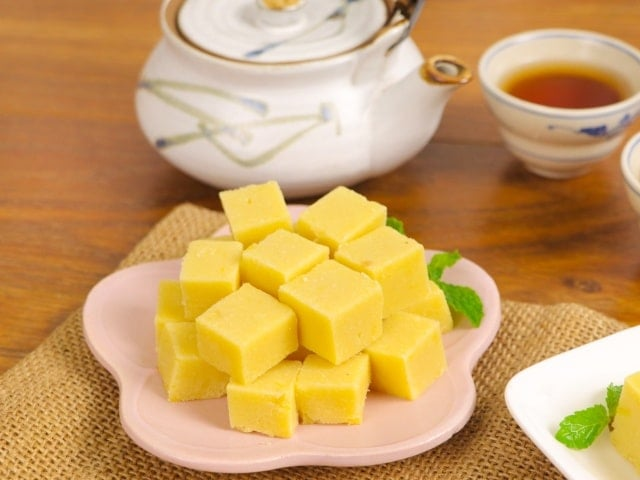

Top 9 món ăn đặc sản Hải Dương nhất định bạn phải thử một lần
1. Bánh đậu xanh
Bánh đậu xanh là một đặc sản nổi tiếng của Hải Dương,
thu hút không chỉ thực khách trong nước mà cả du khách quốc tế.
Bánh được chế biến từ đậu xanh tươi xay nhuyễn kết hợp cùng đường
và dầu thực vật. Sau khi hoàn thành, bánh được cắt thành những miếng
vuông nhỏ và gói trong giấy bạc. Hương vị của bánh đậu xanh ngọt bùi,
đặc biệt thú vị khi thưởng thức kèm với một tách trà nóng.

2. Bún cá rô đồng
Bún cá rô đồng, mặc dù có thể được tìm thấy ở nhiều địa phương khác nhau
trong khu vực Bắc Bộ, nhưng khi nhắc đến bún cá rô đồng ở Hải Dương,
người ta luôn ghi nhớ về hương vị đặc trưng và không thể quên được.
Đây chính là một trong những biểu tượng ẩm thực của vùng đất này,
một món ngon mà người dân địa phương thường xuyên thưởng thức.Bún
cá rô đồng được chế biến từ thịt cá rô tươi ngon, đánh bắt tại địa
phương. Sự kết hợp tinh tế giữa nguyên liệu chất lượng và cách nấu
độc đáo tạo nên một hương vị đặc biệt, làm say đắm lòng người thưởng
thức. Món ăn này không chỉ là một phần không thể thiếu của ẩm thực Hải Dương
mà còn là điểm đến không thể bỏ qua đối với những ai yêu thích ẩm thực đặc sản.
Bún cá rô đồng là một đặc sản không thể bỏ qua khi bạn khám phá văn hóa ẩm thực
của Hải Dương. Một tô bún cá rô thường bao gồm các thành phần như cá chiên,
cá rim, sườn heo, giò heo, thịt mọc, tất cả được kết hợp cùng nước dùng đậm đà
và hấp dẫn.
3. Bánh lòng Kinh Môn
Khi đặt chân đến Hải Dương, không thể bỏ qua món bánh lòng Kinh
Môn - một biểu tượng ẩm thực đích thực của vùng đất này. Đây không chỉ
là một món ngon, mà còn là một phần của di sản văn hóa ẩm thực của người
dân địa phương.Bánh lòng Kinh Môn được xem như một loại bánh truyền thống,
thường xuất hiện trong các dịp lễ hội và thờ cúng tổ tiên. Để tạo nên thành
phẩm hoàn hảo, người làm bánh cần phải có kỹ năng điêu luyện, để các nguyên
liệu hài hòa và tinh tế.Hương vị của bánh lòng là sự kết hợp đầy tinh tế giữa
hương thơm của gạo, vị ngọt của lạc rang, và vị cay nhẹ từ gừng. Mỗi miếng bánh
lòng không chỉ là một trải nghiệm ẩm thực mà còn là một chuyến hành trình
khám phá văn hóa và truyền thống của Hải Dương.
4. Bánh đúc lạc
Bánh đúc đậu là một món ăn nổi tiếng tại Hải Dương, được làm
từ bột gạo và đậu phộng, mang lại hương vị đặc trưng cho thực khách.
Khi thưởng thức bánh đúc đậu, chỉ cần chấm kèm mắm tôm hoặc tương bần
và thêm một chút rau sống, bạn sẽ trải qua một trải nghiệm ẩm thực
đáng nhớ. Món này thường được bày bán rộng rãi tại Hải Dương, cho
phép bạn thưởng thức nó bất cứ lúc nào.

5. Bánh đa gấc Kẻ Sặt
Thị trấn Kẻ Sặt ở Hải Dương nổi tiếng với những chiếc bánh đa gấc
độc đáo và thơm ngon. Mặc dù bánh đa không phải là một món lạ đối với
người dân địa phương, nhưng với bánh đa gấc, đây là một trải nghiệm mới
mẻ và đặc biệt.Bánh đa gấc được chế biến từ các nguyên liệu dân dã
như gạo, gấc chín, đường, vừng, lạc, và dừa thái mỏng. Khi thưởng
thức, bạn sẽ cảm nhận được hương vị bùi béo, ngọt thơm đặc trưng
mà không thể quên.Nếu bạn đến Hải Dương, bạn có thể mua bánh đa
gấc làm quà biếu cho người thân và bạn bè, mang theo một phần nhỏ
của vùng đất này trong lòng và trong hương vị.
6. Chả rươi Tứ Kỳ
Khi đến Tứ Kỳ - Hải Dương, bạn không thể bỏ qua cơ hội thưởng thức
các món ăn đặc biệt từ rươi, đặc biệt là chả rươi thơm ngon - một
đặc sản của vùng quê Tứ Kỳ. Rươi là loài động vật thân mềm sống ở
vùng nước lợ, nước ngọt, và mùa rươi thường xuất hiện vào cuối thu
và đầu đông.Trong số các loại rươi, rươi Tứ Kỳ nổi tiếng và được
ưa chuộng nhất ở Hải Dương. Người dân địa phương tận dụng rươi để
chế biến thành nhiều món ăn hấp dẫn như nem rươi, lẩu rươi, rươi
rang muối... Tuy nhiên, chả rươi là một trong những món phổ biến
nhất và được nhiều thực khách yêu thích.Chả rươi thường được làm
theo phương pháp truyền thống, mang đến hương vị đặc trưng và cuốn
hút. Với vị ngậy, ngọt đậm của thịt rươi kết hợp với trứng gà và mùi
thơm của vỏ quýt và húng thơm, mỗi miếng chả rươi đều là một trải
nghiệm thú vị mà thực khách khó lòng quên.
7. Bánh cuốn Bắc Sơn
Nếu có dịp đến Hải Dương, ghé đến những con phố chính ở thành phố
như Bắc Sơn, Phạm Hồng Thái… bạn sẽ bắt gặp các nhà bán bánh cuốn cả
ngày. Bánh cuốn có mặt ở nhiều tỉnh thành của Việt Nam, mỗi vùng có một
loại bánh cuốn với dáng hình, hương vị và tên gọi khác nhau như: bánh
cuốn Thanh Trì, bánh cuốn Phủ Lý, bánh cuốn Cao Bằng, bánh mướt Nghệ
An hay bánh ướt ở Huế, Đà Lạt… nhưng bánh cuốn Hải Dương sẽ làm bạn
thích thú và ấn tượng trước hương vị đặc trưng
8. Bánh gối
Bánh gối là một trong những món ăn vặt đặc trưng của Hải Dương.
Lớp vỏ bánh được làm từ bột gạo và được tạo hình đẹp mắt, sau đó được
chiên trong dầu nóng. Khi chín, bánh có màu vàng ruộm, tạo nên một
hình ảnh hấp dẫn và mời gọi.Nhân bánh gối thường bao gồm thịt heo,
nấm mèo, miến, trứng cút và các loại gia vị khác. Ăn bánh gối ngon
nhất khi còn nóng, khi vỏ bánh giòn rụm kết hợp với phần nhân bên trong
thơm ngon. Bạn có thể thưởng thức bánh gối kèm theo tương ớt hoặc nước
chấm chua ngọt để tăng thêm hương vị.
9. Bánh dày Gia Lộc
Thị trấn Gia Lộc - Hải Dương được biết đến như là nơi khai sinh của món
bánh dày, trở thành biểu tượng ẩm thực truyền thống của người dân địa phương.
Bánh dày được làm từ bột, mang màu trắng và có vị dẻo thơm của xôi nếp,
với màu xanh non của lá chuối góp phần tạo nên hương vị đặc biệt và độc đáo.
Khi thưởng thức bánh dày, thường kèm theo dăm bông hoặc chả giò,
tạo nên một tổ hợp hương vị độc đáo và hấp dẫn. Mặc dù là một món ăn dân
dã, nhưng bánh dày lại có sức hút đặc biệt đối với thực khách khắp nơi,
không chỉ vì vị ngon mà còn vì giá trị văn hóa sâu sắc mà nó đại diện.
Quay về trang chủ